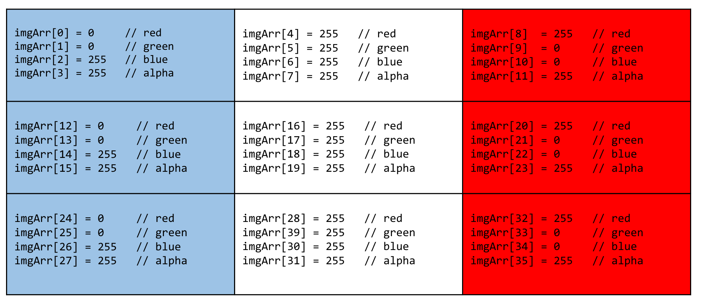

The image below (labeled "Original") appears inside an HTML canvas element. We'll learn more about canvas elements later in the course. For now, the important thing to know is that, unlike an image displayed normally in the browser using the IMG tag, the image data that appears in a canvas element is available to Javascript as a "bitmap".
The bitmap data is an Array that maps four numbers to each pixel in the image: r, g, b, a, where r, g, b are integer values from 0 to 255 which describe red, green, and blue respectively; and a, which is an 'alpha' value between 0 and 255 in which 0 is transparent and 255 is completely opaque. Since there are four array elements for each pixel, the total array will contain 4 times as many elements as there are pixels in the image.
The first pixel's red data is at data[0], the second pixel's red data at data[4], etc.
This demo shows how to write additional code inside the function that will modify the image data to create a new, green-only version.
Remember, this problem is, at its essence, about arrays and looping and counting, not about fancy graphics-processing mathematics. The key is to traverse the data array, copying and modifying the appropriate values as you go. Along the way, you'll be learning that looping and counting can sometimes be all it takes to do "fancy graphics-processing mathematics"!
Here's a diagram that may help. This is a nine-pixel approximation of the French flag, as a bitmap. There are nine pixels, each with four array elements to describe their appearance, for 36 data elements in all. So, for example, to change the color of the top-right pixel to blue, you'd change
imgArr[8] to zero and imgArr[10] to 255.

In this case, you won't actually change the values in the original image array itself, but rather you'll copy the values over to a new array, and make the changes there. The comments in the js/hw2ArrayImageProcessing.js file should point you in the right direction.
Important Note: To do this exercise using your local file system (with no Web server involved), you will need to use Firefox as your browser. Chrome will display an error due to security constraints.
| Original | GREEN-only version |
|
|
|